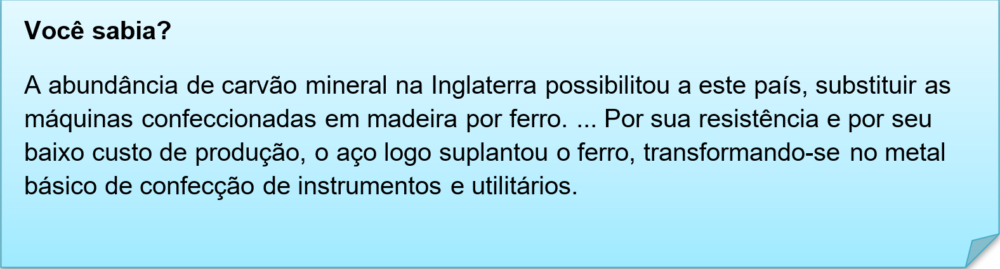
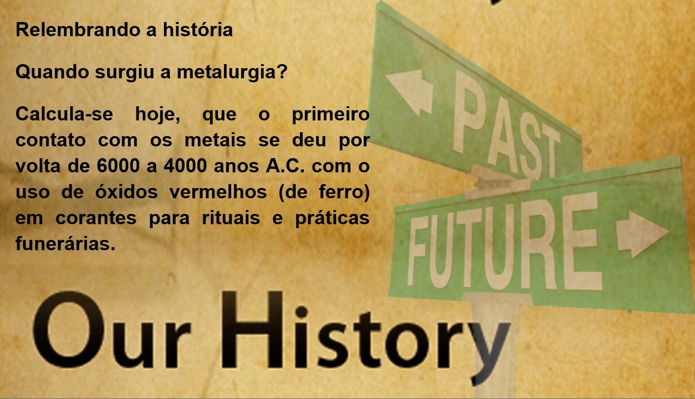
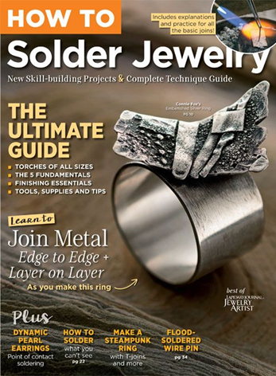

Capítulo 3: Metallurgy – Metalúrgica
What are the types of metallurgy?
The three main branches of Metallurgical Engineering Course are physical metallurgy, extractive metallurgy and mineral processing. Physical metallurgy deals with problem solving i.e. development of metallic alloys needed for different types of manufacturing and construction.
Nesta unidade vamos expandir os conhecimentos na área de metalurgia. Vamos ver novos vocabulários, conhecer matérias primas entre outros. No texto acima, temos a importância dessa atividade para a sociedade atual, que necessita de todos esses materiais para ter uma boa qualidade de vida. Vamos a tradução desse trecho, para introduzir nosso vocabulário.
Os três principais ramos da metalurgia são: metalurgia física, metalurgia extrativa e processamento de minerais. A metalurgia física lida com a solução de problemas, isto é, o desenvolvimento de ligas metálicas necessárias para diferentes tipos de fabricação e construção.

Contextualizando – vocabulário metais brutos
Nessa lista temos os elementos brutos que após o processo de metalurgia se transformam em objetos e produtos.
aluminium > alumínio
brass > bronze
bronze > bronze
copper > cobre
gold > ouro
iron > ferro
lead > chumbo
magnesium > magnésio
mercury > mercúrio
nickel > níquel
platinum > platina
silver > prata
steel > aço
tin > lata
uranium > urânio
zinc > zinco

Reconstruindo conhecimentos – Plural dos substantivos
O plural dos substantivos possui como regra geral o acréscimo de “s”.
Car (carro) – cars (carros)
Boy (garoto) – boys (garotos)
Book (livro) – books (livros)
Existem, no entanto, algumas exceções:
1- Se o substantivo terminar em “y”, precedido de consoante, tira-se o “y” e acrescenta-se “ies”.
Butterfly (borboleta) – butterflies (borboletas)
City (cidade) – cities (cidades)
Baby (bebê) – babies (bebês)
2- Nos substantivos terminados em “f” ou “fe”, no singular, troca-se o “f” ou “fe” por “v” ou “ve” no plural e acrescenta-se “s”.
Life (vida) – lives (vidas)
Knife (faca) – knives (facas)
Wife (esposa) – wives (esposas)
3- Nos substantivos terminados em “s, sh, ch, x, z, o”, acrescenta-se “es” para formar o plural.
Glass (copo) – glasses (copos)
Brush (escova) – brushes (escovas)
Beach (praia) – beaches (praias)
Box (caixa) – boxes (caixas)
Topaz (topázio) – topazes (topázios)
Tomato (tomate) – tomatoes (tomates)
Aplicando ao nosso conteúdo
• I need to buy metals for working. > Eu preciso comprar metais para trabalhar.
• I do rings with two tablets of the gold. > Eu faço alianças com duas barras de ouro.
• The solder produces metal windows. > O soldador produz janelas de metal.
O que aprendi
• Nessa unidade aprendemos o vocabulário sobre metalurgia e suas áreas;
• Aprendemos a classificar os substantivos quando a sua pluralização;
• Observamos a história da metalurgia;
Praticando
Leia o folder e destaque palavras cognatas, ou seja, palavras que são parecidas com o português na escrita e na tradução. Por exemplo a palavra METAL.

Na lista de metais, há vários que usamos no dia a dia. Elabore uma lista com metais e objetos que são feito com eles. Observe o exemplo.
• Aluminium – pans (panelas)
•
•
Seguindo as regras de plural dos substantivos, pluralize as palavras abaixo retiradas do folder do exercício 1.
• Solder > Solders
• Layer
• Ring
• Torch
• Jewerly